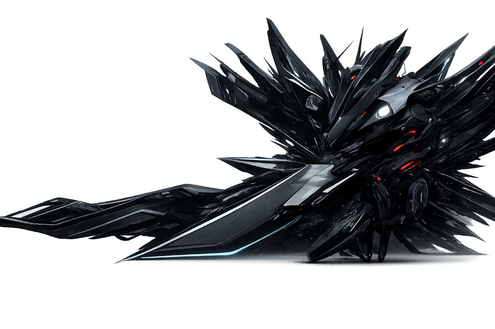

Cybernetic mecha-organic neural network online. Core coordinates fully synchronized. Establish tactical telemetry parameters to initiate active sector sweep and calibration.

FIONURE 核心是一种先进的半机械半有机晶体复合结构，能够产生并稳定高达 94.8% 的神经网络能量电荷。在 Protocol 6 协议的激活下，核心将建立一个零延迟的系统诊断通道，使得各战术层级可以在无视传统物理介质的情况下，实时同步数据并进行战术部署。
The Fionure core represents an advanced mecha-organic crystal composite structure capable of generating and stabilizing neural network power capacities of up to 94.8%. Upon active protocol 6 initiation, the core deploys zero-latency telemetry diagnostics channels, allowing real-time data sync and tactical overwatch deployment across all functional segments.
Advanced crystalline shielding matrix providing extreme mechanical resistance and core protection against thermal discharge.
Zero-latency biological and mecha integrated stream processing over 432 million telemetry calculation packets per millisecond.
Automatic calibration systems constantly executing micro-alignments to avoid resonance feedback loop anomalies.
Advanced multi-dimensional target acquisition grids scanning sector coordinates and mapping organic core anomalies.